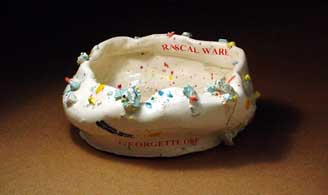

| Rascal
Ware in Canton
This is the sixth chapter in a series of articles by Don Pilcher
on some of the characters that have been inspiring him and helping
him with creating his ceramic works. Feedback is welcome: Don Pilcher:
.
Rascal Ware in Canton - Chapter 6

It's not every day that we are honored with our own museum exhibition.
Of course, in accepting the invitation, we have also bought some
pressure. After all, we want to show only our best work. But there
are five of us here--Junior, Pilcher, Mosley, Hairy and me. While
I'm the famous one, the others are artistically and emotionally
involved and the question arises, "Can we agree on what IS
our best work?" These four guys really bear down, spouting
something about pressure making diamonds. I see it more as "under
stress, they regress."
If you watch them closely and ask a few questions, you'll find
that each comes to his love for ceramics from a different place.
For Hairy it's the only honest way he knows to make a living. For
Mosley it's an immersion in magic; he loves fire, chemicals and
watching clay thrown on a wheel. The fact that he can't do the latter
makes it all the more desirable. Pilcher is a recovering academic
who can't get past his first step. To him, no process or question
is too small to track down. Having made his discovery, he is then
compelled to talk about it, and at great length. Unfortunately,
he has more words than discoveries, so while I'm running the pottery,
he's running his mouth. By the law of averages, he does come up
with some great stuff. But even that's a black hole because, while
he'll tell you all about it, he won't tell you how he did it.
Junior is the toughest case. He comes to ceramics as if it's a
religion. He is a born-again, fundamentalist, clay-thumping potter.
For him, Rascal Ware is a divine calling that guarantees dignity
and meaning with every breath, even if every breath is oxygen depleted.
He takes that as a sign to embrace reduction firing. Junior seeks
nothing less than the Kingdom of Clay, such as it might be, where
he and George Ohr will sit at the right hand of whomever. He shouldn't
hold his breath. It's rumored that Bernard Leach is still in purgatory
for condescending to . . . well, pretty much everyone.
For my part, I am the power behind the thrown-that's not a typo.
Nor is it an exaggeration. By the strength of my personality, imagination
and wily fingers, I can play these guys like a piccolo - though
they would tell you I beat them like a drum. I remind them that
some men would pay for that kind of experience.
What we have produced for the Canton
Museum of Art is, of course, a collection of everybody's
strength. There are not that many seashells-score one for Georgette!
I call it the Rascal Ware Trifecta: "Twos and Fews," "Pete
and Re-Petes", and "Inspired and Expired." You can
look at these works as pottery that is born of poetry, prose, biography
and our collective human condition. All of the pieces are driven
by the Rascal Ware Story, the first five chapters of which are on
display. You really should read them in order to understand what
you see. Some readers will discover truth and beauty. The truth
we build with a pitchfork; the beauty is just a skim coat. Further
clues to appreciating the Trifecta can be found in the world history
of ceramics, the Oedipus method of self-discovery and fulfillment,
the AARP magazine and our website, www.donpilcher.net.
I know that's a curious and ambiguous assortment of sources, but
remember, ambiguity is one of the touchstones of real art.
------------------------------------
About Don Pilcher: American studio potter and author.
Pilcher earned a BFA at the Chouinard Art Institute in Los Angeles
in 1964 and an MFA at the Rhode Island School of Design in 1966.
He taught at the University of Illinois at Urbana-Champaign from
1966-99, where he is now Professor Emeritus. He makes wheel-thrown
and altered functional ware. Images & text ©
Don Pilcher. Contact:
.
Rascal Ware Chapter 1/Español
Rascal Ware Chapter 2/Español
Rascal Ware Chapter 3
Rascal Ware Chapter 4
Rascal Ware Chapter 5
Rascal Ware Chapter 6
More Articles |
{kind=link}